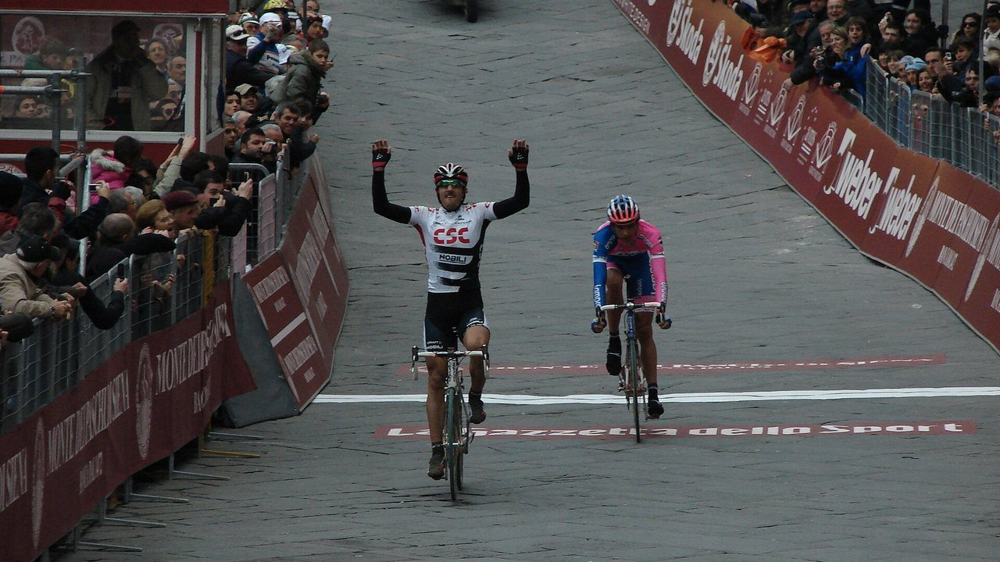

Race, Strade Bianche

Behind
Best +0:01
371W
Target 418 W-47 W
- Cadence
- 87rpm
- Heart
- 140bpm
- Speed
- 26.5km/h
Recover16 of 18
0:38
Next: · 1:00 at level 18
-2.3%
117 m climbed
6.37 km
11
Resistance / 32
Solo races your best-time ghost: position reads Ahead or Behind, and solo alone gets a Pause button. Frozen at 15:22.